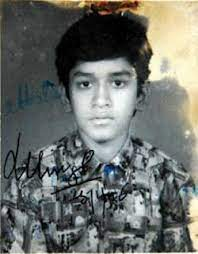
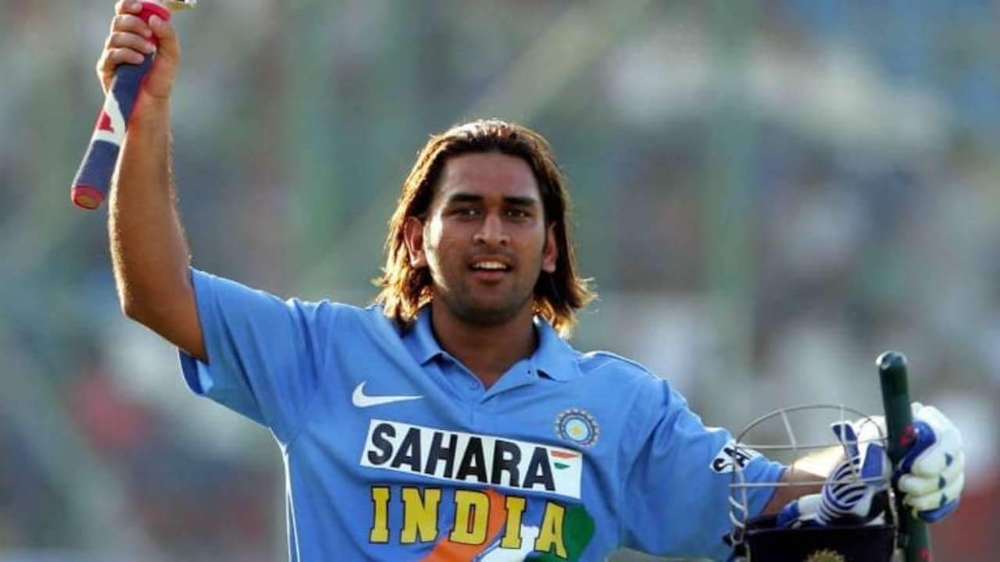
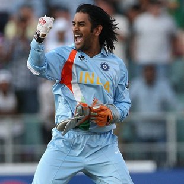
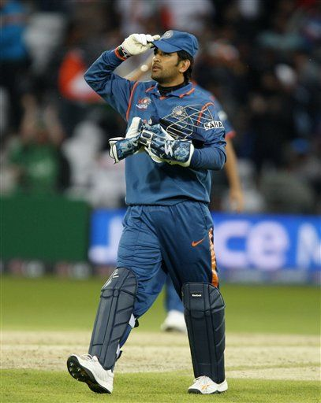
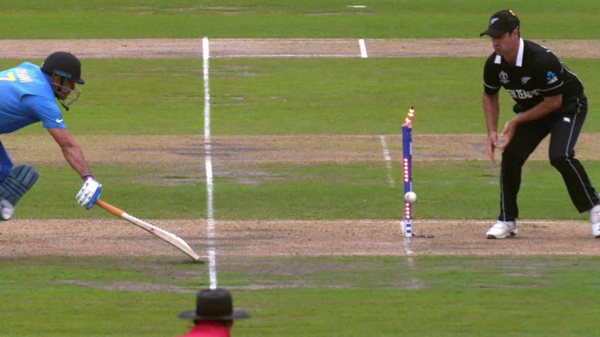

Mahendra Singh Dhoni (born 7 July 1981), commonly known as MS Dhoni and Mahi, is a cricket player and was the former captain of the Indian cricket team.
He is known as the greatest captain of all time, having achieved more success than any other captain in the history of cricket. MS is often known for finishing thrilling games in style.
He is also known as "Captain Cool" as he is capable of keeping calm during tough phases of the game. He hold various world records as a batsman , wicket-keeper and captain.
STATISTICS
X
Personal Information
Full Name
Mahendra Singh Dhoni
Born
7 July 1981 (age 40)
Ranchi, Bihar (now in Jharkhand), India
Nickname
Mahi, Captain Cool, MSD, Thala
Height
1.80 m (5 ft 11 in)
Batting
Right-handed
Bowling
Right-arm medium
Role
Wicket-keeper batsman
Spouse
Sakshi Dhoni
X
International Career
National side
India (2004–2019)
Test debut (cap 251)
2 December 2005 v Sri Lanka
Last Test
26 December 2014 v Australia
ODI debut (cap 158)
23 December 2004 v Bangladesh
Last ODI
9 July 2019 v New Zealand
T20I debut (cap 2)
1 December 2006 v South Africa
Last T20I
27 February 2019 v Australia
ODI shirt no.
7
X
Career statistics
Competition
Test
ODI
T20I
Matches
90
350
98
Runs scored
4,876
10,773
1,617
Batting Average
38.09
50.53
37.60
100s/50s
6/33
10/73
0/2
Top score
224
183*
56
Balls bowled
96
36
-
Wickets
0
1
-
Catches/stumpings
256/38
321/123
57/34
X
International Captain
Test
ODI
T20I
Total
Matches
60
199
72
331
Won
27
110
41
178
Lost
18
74
28
120
Drawn
15
0
0
15
Tied
0
4
1
5
NRs
0
11
2
13
X
ICC Trophies
T20I World Cup
2007
Test Mace
2010
ODI World Cup
2011
Champions Tophy
2014
BIOGRAPHY
Early Life

Mahendra Singh Dhoni, popularly known as ‘MS Dhoni’ was born in a middle-class Rajput family on 7 July 1981 in Ranchi, Jharkhand (then in Bihar).
His father, Pan Singh, was an employee at MECON. His mother, Devki Devi, is a homemaker.
He completed his schooling at DAV Jawahar Vidya Mandir in Shyamali, Ranchi.
During his school days, he used to play badminton and football. He played as a goalkeeper in a local football team.
Watching his eye-catchy skills, his football coach sent him to a local cricket club to play cricket.
He never played cricket before but he managed to grab the concept perfectly.
His wicket-keeping skills amazed everyone in the club.
He was appointed as the wicketkeeper for the local team on a regular basis.
Later, he started to focus primarily on cricket and left his glory days of football and badminton behind.
It was a drastic change in his life. He started to take professional coaching after Class X.
He was also a meritorious student and teachers respected him for his versatile nature.
He used to manage his studies and sports sessions perfectly. His family was very supportive of his ambitions.
Early Career
He was selected as the U-19 Bihar cricket squad member in 1998-99.
When he was 18 years old, he played the first match in Ranji Trophy for Bihar and scored a half-century.
Just after 5 years, his skills caught the eyes of team selectors of the Indian national cricket team.
His excellent performance and a century for the East Zone helped the team to clinch the Deodhar Trophy.
His 60 runs also helped his team to clinch the Duleep Trophy.
As time passed, he joined Indian Railways as a Train Ticket Examiner (TTE) in Midnapore District, West Bengal in 2000.
He was very honest. He also had a mischievous side.
He once dressed as ghosts with his friends and scared the night guards patrolling the railway quarters.
He eventually became better in his cricketing skills.
His performance in the Triangular Tournament held in Kenya against Pakistan.
This christened him with a new name ‘clinical destroyer’ of commendable bowling attacks.
PC Poddar, the Bengal captain back in the 60s, identified his skills and immediately called the National Cricket Academy.
International Career

Dhoni was selected in the ODI team for the Bangladesh tour in 2004/05.
In his debut match, Dhoni was run out for the duck.
Despite playing an average series against Bangladesh, Dhoni was picked for the ODI series against Pakistan.
In the second match of the series, Dhoni scored 148 runs in 123 balls and made a record for the highest score by an Indian wicket-keeper.He played in the first two matches in the Sri Lankan Bilateral ODI series that was held between October-November 2005.
He was promoted to No. 3 in the third ODI held at Sawai Mansingh Stadium. Dhoni scored an unbeaten 183 off 145 balls against Sri Lanka in a winning cause.
He received the Man of the Series award.
In a series against Pakistan, Dhoni scored 72 runs off 46 balls in the third match, helped India to lead the series 2-1. In the final match, Dhoni scored 77 runs off 56 balls, helping India to win the series by 4-1.
On April 20, 2006, he was ranked as the number one batsman in ICC ODI Rankings sidelining Ricky Ponting. India had disappointing tournaments-- DLF Cup 2006-07, 2006 ICC Champions Trophy.

Dhoni was named vice-captain of the ODI team for the series against South Africa and England.
In June 2007, Dhoni received an A Grade contract from the BCCI.
In September 2007, for the World Twenty20 matches, Dhoni was elected as the captain of the Indian team.
In September 2007, Dhoni shared a record with his idol Adam Gilchrist-- most dismissals in an innings in ODI.
In the first season of IPL (Indian Premier League), Dhoni was contracted by the Chennai Super Kings for US$1.5 million, becoming the most expensive player in the first season auctions. Under his captaincy, the team won 2010, 2011 and 2018 IPL titles. The team also won 2010 and 2014 Champions League T20 titles.
In 2009, during the series between India and Australia, Dhoni scored 124 runs off 107 balls in the second ODI and 71 runs off 95 balls in the third ODI. On September 30, 2009, Dhoni took his first wicket in international cricket against West Indies in the Champions Trophy. In 2009, he topped the ICC ODI Batsman ranking.

In 2011, Dhoni-led India to the finals with a victory over Australia in the quarter-finals and Pakistan in the finals.
Dhoni helped India win by chasing a target of 275 against Sri Lanka in the finals with Gautam Gambhir and Yuvraj Singh. Dhoni finished the match with a historical six with a score of 91*. He bagged Man of the Match for his outstanding performance in the 2011 Cricket World Cup.
In 2012, after the World Cup win, Pakistan toured India for a bilateral series for the first time in five years.
India lost the series by 1-2.
In 2013, India won ICC Champions Trophy and Dhoni became the first and the only captain in the history of cricket to claim all the ICC trophies.
In the same year, he became the second India batsman after Sachin Tendulkar to score 1,000 or more ODI runs against Australia.
During 2013-14, India toured South Africa and New Zealand but lost both the series.
In 2014, India won the ODI series in England by 3-1 and in India by 2-1 against West Indies.
In 2014, ICC named him as the captain and wicketkeeper of the 'Team of the Tournament' for the T20 World Cup.
During the 2015 Cricket World Cup, Dhoni became the first Indian captain to win all group stage matches in such a tournament.
Despite a great start in the 2015 Cricket World Cup, India lost the title to the eventual champions-- Australia.
In January 2017, Dhoni stepped down as the captain of the Indian team in all the limited-over formats.
In the ODI home series against England, he scored well and was named as a wicketkeeper of the 'Team of the Tournament' at the 2017 Champions Trophy and ODI XI of the year by Cricbuzz.
In the same year, during the ODI against Sri Lanka, he became the first wicket-keeper to effect 100 stumpings.
In the 2014-15 season, Dhoni played his last test series against Australia and captained the second and third test matches. Dhoni announced his retirement from the Test format, following the third test in Melbourne. In his last test match, Dhoni effected nine dismissals and broke Kumar Sangakkara record for stumpings with 134 in all the formats.
In 2018, the ban on Chennai Super Kings was uplifted and the team returned to play the IPL.
Dhoni was again contracted by CSK and led the team to win the third IPL title.
In 2019, he again captained for CSK and the team emerged to be one of the strongest in the season.
However, Mumbai Indians won the title.
In the 2019 Cricket World Cup, Dhoni was selected for the Indian team.
Dhoni played well against South Africa, Australia and West Indies but was criticised for his strike rate against Afghanistan and England.
In the semi-finals against New Zealand, Dhoni scored a half-century in the second innings but was run out at a very crucial stage. With his dismissal, India's World Cup run ended.
Retirement

Dhoni announced his retirement from international cricket on 15 August 2020 on the day of India's 74th independence.
He did so by posting a video on Instagram that contained pictures from both the best and the worst moments of his career with the song Mai Pal do Pal ka Shayar Hoon playing in the background.
The video had been captioned as "Thanks a lot for ur love and support throughout.from 1929 hrs consider me as Retired".
In November 2020, Dhoni was nominated for the ICC Men's ODI Cricketer of the Decade and ICC Spirit of Cricket Award of the Decade.
Eventually, Dhoni was voted as winner of the ICC Spirit of Cricket Award of the Decade.
Territorial Army
Dhoni holds a honorary rank of Lieutenant Colonel in the Parachute Regiment of the Indian Territorial Army (106 Para TA battalion).
The honorary rank was presented to him by the Indian Army in 2011 for his service to the nation as a cricketer.
After completing five parachute training jumps from Indian Army aircraft in the Agra training camp,
he became a qualified paratrooper in 2015.
In August 2019 he completed a two-week stint with the Territorial Army in Jammu and Kashmir.
RECORDS
Test Records
Under Dhoni's captaincy, India topped the Test cricket rankings for the first time, in 2009.
Dhoni has the most overseas Test defeats by an Indian captain, with 15.
Dhoni is the first Indian wicket-keeper to complete 4,000 Test runs.
Dhoni's 224 against Australia in Chennai is the third highest score by an Indian captain. En route to 224, Dhoni registered the highest Test score by an Indian wicket-keeper when he was on 193, beating Budhi Kunderan's 192. It was also the highest score by a wicket-keeper–captain beating Englishman Alec Stewart's 164.
Dhoni's maiden century against Pakistan in Faisalabad (148) is the fastest century scored by an Indian wicket-keeper, and fourth overall.
After hitting a six in the third Test against England in Southampton, Dhoni completed 50 sixes as a captain, an Indian record.
Dhoni, with 294 dismissals in his career, ranks first in the all-time dismissals list by Indian wicket-keepers.
Dhoni shares the record for most dismissals in an innings (6, with Syed Kirmani) and in a match (9) by an Indian wicket-keeper.
ODI Records
Dhoni is third captain (and the first non-Australian) overall to win 100 games.
Fourth Indian to reach 10,000 ODI runs after Sachin Tendulkar, Sourav Ganguly & Rahul Dravid and also the second wicket-keeper to reach the milestone.
First player to pass 10,000 runs in ODI cricket with having a career average of over 50.
Dhoni has the fifth highest batting average (51.09), among cricketers with more than 5,000 runs and the second highest batting average among players with an aggregate of over 10,000 runs.
Most career runs in ODI history when batting at number 6 position (4031)
Only player to score more than one hundred in ODI cricket when batting at number 7 position or lower (Dhoni has 2 centuries at number 7).
Most not outs (82) in ODIs.
First Indian and fifth overall to hit 200 sixes in ODIs.
Dhoni's 183* against Sri Lanka in 2005 is the highest score by a wicket-keeper.
Dhoni's 113 against Pakistan in Chennai in 2012 is the highest by a captain batting at number 7.
Dhoni and Bhuvneshwar Kumar were involved in a partnership of 100 not out against Sri Lanka, which is India's highest eighth wicket partnership in ODIs.
Most unbeaten innings and highest average (among batsmen with more that 20 such innings) in successful ODI run-chases.
Holds the record for playing the most matches in ODI history as captain who has also served as a wicket-keeper(200)
Dhoni holds the records of the most dismissals in an innings (6) and career (432) by an Indian wicket-keeper.
Dhoni has the most stumpings (120) by any wicket-keeper in an ODI career and is so far the only keeper to pass 100 stumpings
First Indian wicket-keeper to take 300 ODI catches and fourth wicket-keeper in the world to achieve the feat.
T20I Records
Most wins in T20Is as captain (41)
Most matches as captain in T20Is(72)
Most matches in T20I history as both captain and wicket-keeper (72)
Most consecutive T20I innings without a duck (84).
Dhoni holds the record for playing the most T20I innings (76) and scored the most runs(1,153) before scoring a fifty.
Most dismissals as wicket-keeper in T20Is (87)
Most stumpings as wicket-keeper in T20Is (33)
Most stumpings as wicket-keeper in T20Is (33)
Most stumpings as wicket-keeper in T20Is (33)
Most catches as wicketkeeper in a T20I innings (5)
MS Dhoni is my hero. We talk a lot about Sachin Tendulkar, Virender Sehwag. But this boy has much talent then anyone else.
Rahul Dravid :
One of the things I liked about MS was, what you saw was what you got. Very uncomplicated, always led by example. One of the things I really liked about playing under MS was that he never asked you to do anything that he himself didn't do.
Sachin Tendulkar :
Dhoni is the best captain I have played under. He always tried to be a step ahead of the opposition.
Gary Kirsten :
I would go to war with Dhoni by my side.
Adam Gilchrist :
MS is not the next Gilchrist, he is the first MS Dhoni.
Sourav Ganguly :
I had over the years constantly looked out for players who remain steady under pressure and possess the capability to change the course of the match. Mahendra Singh Dhoni, who came to my notice in 2004, was a natural progression of this thought. I wish I'd Dhoni in my 2003 World Cup team. I was told that when we were playing the 2003 World Cup final he was still a ticket collector with Indian Railways. Unbelievable!
Sunil Gavaskar :
When I die the last thing I want to see is the six that Dhoni hit in the 2011 World Cup final.
VVS Laxman :
For being a good captain, there are two important qualities. Tactically you have to be very good which Dhoni is. He understood the strengths and weakness of the players he was playing with even when he did not captain;, especially with the bowlers. Second, is man-management skills. As captain, you want to be consistent. Dhoni is very good because he has been very balanced and equanimous irrespective of the loss or a win and that makes him very special.
Glenn McGrath :
Dhoni has respect for all other playing nations. I had found him to be a really strong leader.
Shoaib Akhtar :
Dhoni is one guy who doesn't know the meaning of fear.
Kevin Peterson :
MS Dhoni is the cleverest captain I have ever seen.